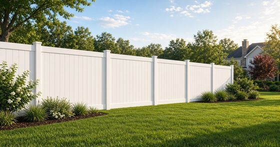

Fence guide
What Changes the Cost of a Fence in Fuquay-Varina?
Quick answer: Fence cost in Fuquay-Varina changes with the material, the length, the height, the gates, the ground, and the rules on your lot. A long solid fence on a slope is a bigger job than a short open fence on flat ground. This page does not list prices. A local fence pro has to see the yard. We connect homeowners with that pro. We do not install the fence ourselves.
What should I look at before I ask about price?
| What changes the job | What to notice in your yard |
|---|---|
| Material | Vinyl, wood, chain link, or aluminum |
| Length | How many feet the fence will run |
| Height | How tall you want it, and the town limit |
| Gates | How many gates, and how wide they are |
| Ground | Slope, red clay, rock, or an old fence |
| Rules | Permit, HOA, property line, and the 811 call |
Use the rows above as a checklist. The sections below explain each one in plain words. When you want a look at your own line, request a free estimate.
How does the fence material change the job?
The material is the first big choice. Wood, vinyl, chain link, and aluminum are different products. They use different posts and different panels. One material is not right for every yard.
Around Fuquay-Varina, red clay, humid summers, and your HOA should shape that choice. Our vinyl versus wood guide compares privacy fences. Our chain link guide covers long runs and dogs. The service pages go one step further: vinyl, wood privacy, chain link, and aluminum and pool fences.
A pool fence is a different project from a backyard privacy fence. If a pool is part of the plan, start with the aluminum and pool fence page linked above.
Ask to hear about the same line in more than one material. That is how you compare them on your yard.
How does fence length change the cost?
People measure a fence in linear feet. That means the distance along the fence line, not the size of the whole yard. More feet means more posts, more panels, and more holes.
A fence around the whole boundary is a bigger job than a fence around the part you use. A dog run or a garden is often the smaller plan. On a longer lot, including lots in Willow Spring, that choice matters even more. Our Willow Spring fence rules guide shows which county rules apply before you draw a long line.
Walk the line if you do not know the footage. A rough number is enough for a first talk. The real measure happens at the yard.
How does fence height change the cost?
A taller fence uses more material than a short one. It can also catch more wind. Town rules may cap the height, so you may not get every height you want.
In Fuquay-Varina, height depends on the yard and on where the lot sits. Our fence height limits guide quotes the Town ordinance. The Town's fence FAQ is the short list of local standards. Your HOA can set a stricter rule than the Town. That same FAQ says to check for private rules, and Town standards still apply.
Holly Springs is its own town. See our Holly Springs area page and our permits by town guide. Apex and Cary are their own towns too, so use each town's fence rules there.
How do gates change the cost?
Every gate needs extra posts, hinges, and a latch. A wide gate is more work than a narrow walk gate. A gate on a slope has to swing without hitting the ground.
Think about where you walk, where a mower needs to pass, and where a truck might need to enter. One well-placed gate can matter more than a second gate you rarely use. Mark the spots on a sketch before you ask for an estimate.
How do slope, red clay, and rock change the cost?
Flat ground is the simple case. On a slope, the fence may step down the hill. Posts on the low side may need to be taller so the top line stays even. A steep yard takes more planning than a level one.
The soil matters too. NC State Extension says clay holds water. Clay soils are often too sticky when wet and too hard when dry to work. In well-drained Piedmont soils, the layer under the topsoil is often red, brown, or yellow. A post hole in that clay can hold water. Our guide on why red clay eats fence posts explains drainage and ground-contact wood.
Rock is a different problem. If a hole hits rock, a stump, or old concrete, that hole takes longer. This page does not claim rock is under every Fuquay-Varina yard. It is a fact of that hole when it shows up. The same can happen in Holly Springs and the rest of southern Wake County.
What if an old fence has to come out?
Taking out an old fence is part of the job. It is not a free extra. Posts set in concrete do not pull easily. Hard clay makes that harder. The old wood, metal, or vinyl has to leave the yard.
Say if the old fence is still standing, if it is falling down, or if only a few posts remain. Photos help. A replacement is also a chance to move a line that sat in an easement or too close to a neighbor.
How do permits, an HOA, and the property line change the plan?
Rules do not set one price for every fence. They can change the height, the material, where the fence sits, and when work can start.
The Town of Fuquay-Varina says a permit is not required for a fence in the corporate limits or the ETJ. Corporate limits means inside the town. The ETJ is the area just outside town limits that still follows Town rules. Our Fuquay-Varina permit guide explains how to tell which area your lot is in. Nearby towns publish their own answers. Compare them in our permits by town guide.
If you have an HOA, its rules are separate from the Town's. North Carolina law says an owners' association may adopt rules, unless its own papers say otherwise. The Town's fence FAQ says to check your HOA or your deed. Town standards still apply on top of those private rules. We are not your HOA. We cannot approve the fence or promise that your HOA will. Our HOA fence approval guide shows how to get a written yes before anyone digs.
The property line is the other limit. The Town says a fence should sit at least 3 inches from the property line, so you avoid a property line dispute. The Town also says it cannot hand you a survey or survey your lot. Recorded surveys are kept at the county. If you need a new survey, the Town says to hire a registered land surveyor. Find the metal pins if you can, and bring the plat. A plat is the map of your lot.
The same Town FAQ says fences are not allowed in utility, drainage, or stormwater easements. They are also not allowed in the public right-of-way along the street. If the line has to move, the length can change.
To confirm which office covers your lot, call the Town of Fuquay-Varina Planning Department at (919) 552-1429. That is the Town's number, not ours. Our Fuquay-Varina area page explains why two homes in the same zip can follow different rules.
Why does the 811 call change the schedule?
North Carolina law says the person who will dig must give notice first. For a normal yard, that notice has to be at least three full working days before the start date. The law is G.S. 87-122. G.S. 87-119 says the notification center may not charge you for giving that notice.
You reach that center through NC 811. Dial 811, or 1-800-632-4949. NC 811 says it marks primary utility lines. Private lines on private property are not marked. The Town's Call Before You Dig page says to give that notice at least 3 working days ahead, and that the call is free. The call is a safety step. It is not a fence permit, and it does not replace your HOA.
How do privacy and style change the job?
A solid privacy fence blocks the view. It uses more board or panel than a fence you can see through. Open styles include picket and chain link. Solid styles include wood and vinyl privacy panels. Some yards use privacy on the back and an open fence on the side.
Your HOA may allow one style and not another. Front yard rules can also differ from backyard rules. Our fence height limits guide quotes the Fuquay-Varina ordinance before you choose a solid panel out front.
How do access and timing change the job?
Access is how people and materials get into the yard. A wide open side yard is simpler than a locked gate, a steep path, or a deck in the way. If panels have to be carried in by hand, the work takes longer.
Timing is the calendar. It is not a sale price. Clay is sticky when it is soaked and hard when it is dry, which is the Extension note above. An HOA review runs on the HOA's own schedule. The 811 notice needs those three full working days before digging starts. These steps can change when the work can start. They are not a price.
What should I bring to an estimate?
A few notes make the visit clearer:
- A rough length, or a sketch of the line
- The spots where you want gates
- Photos of the slope and of any old fence
- Your HOA rules, if you have them
- The town or county you think covers the lot
When you want someone to see the yard, request a free estimate or call or text (919) 276-8406. We connect you with a local fence pro who can price the real line. We do not install the fence ourselves.
Fence cost FAQ
What changes fence cost the most?
Length, material, height, and the ground usually change the job the most. Gates, an old fence, access, and the rules on the lot matter too. No single item sets a price for every yard in Fuquay-Varina.
Does Fuquay-Varina charge a fence permit fee?
The Town says a permit is not required for a fence in town limits or the ETJ. This page does not list fees. Other towns nearby can differ, so check your own lot.
Does red clay always raise the cost?
No. Clay can slow the holes because it is sticky when wet and hard when dry. Rock or old concrete can slow a hole too. A flat yard with easier digging is a simpler job. Someone still has to see your soil.
Do I have to call 811 before I ask for an estimate?
No. You can ask for an estimate before any marks are on the ground. The person who digs still has to give notice at least three full working days before the start. That call is not a fence permit.
Sources
- Town of Fuquay-Varina Planning FAQ: fences, surveys, and easements
- Town of Fuquay-Varina: Call Before You Dig
- NC 811
- North Carolina G.S. 87-122 and G.S. 87-119, Underground Utility Safety and Damage Prevention Act
- North Carolina G.S. 47F-3-102, powers of an owners' association
- NC State Extension Gardener Handbook: Soils and Plant Nutrients

Free Estimate
Get Your Free Fence Estimate
Tell us about your project and we'll reach out to schedule a free, no-obligation estimate. Prefer to talk now? Call (919) 276-8406.
- Free on-site measurement
- No obligation, no pressure
- Serving Fuquay-Varina and nearby